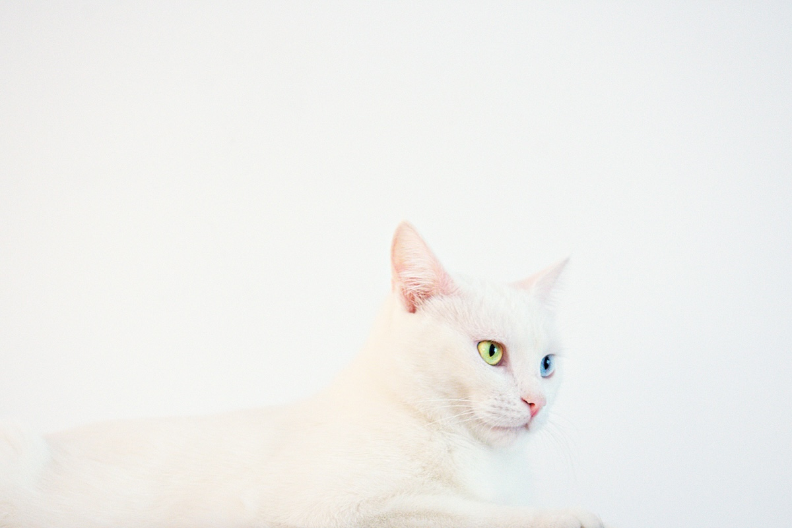

Fotoğrafçılıkta Beyaz Ayarı: Doğru Renkler İçin İpuçları ve Teknikler
Beyaz ayarı, birçok fotoğrafçının sıklıkla duyduğu ama tam olarak ne anlama geldiğini bilmediği kavramlardan biridir. Özellikle dijital fotoğrafçılıkta, renklerin doğru ve doğal görünmesi için beyaz ayarı büyük bir öneme sahiptir. Peki, beyaz ayarı tam olarak nedir, nasıl yapılır ve hangi durumlarda nasıl kullanılır?
Beyaz Ayarı Nedir?
Beyaz ayarı, bir kameranın çektiği fotoğrafta beyazın gerçekten beyaz görünmesini sağlamak için yapılan bir ayardır. Gözümüz, ortam ışığına göre renkleri otomatik olarak doğru algılarken dijital kameralar bunu yapamaz. Çekim yaparken kullanılan ışık kaynağının renk sıcaklığına göre beyaz ayarını doğru yapmak, nesnelerin renginin doğru algılanması için gereklidir. Doğru beyaz ayarı sayesinde, fotoğraflarda mavi, yeşil ya da turuncu ton kaymaları yaşanmaz ve görüntüler doğal görünür.
Renk Sıcaklığı ve Kelvin Ölçeği
Beyaz ayarının temelinde renk sıcaklığı kavramı bulunur. Işık kaynaklarının sıcaklıkları, Kelvin (K) cinsinden ölçülür ve bu sıcaklıklar, ışığın rengini etkiler:
- 1000-4000K: Mum, ampul gibi düşük sıcaklık kaynakları, sıcak (sarı-turuncu) tonlara sahiptir.
- 5000-5500K: Gün ışığı olarak kabul edilen bu aralık, nötrdür ve beyazın en doğru şekilde görünmesini sağlar.
- 6000K ve üstü: Bulutlu günlerde veya gölgede, ışık daha soğuk (mavi) görünür.

Fotoğraf makineleri bu sıcaklık aralığına göre beyaz ayarı yapar ve renklerin doğru şekilde görünmesini sağlar. Hangi ışık koşullarında çekim yapıyorsanız, ona göre beyaz ayarını değiştirmeniz gerekebilir.
Beyaz Ayarı Nasıl Yapılır?
Dijital fotoğraf makinelerinde genellikle farklı beyaz ayarı modları bulunur. Bunları kısaca şöyle sıralayabiliriz:
- Otomatik Beyaz Ayarı (AWB): Kamera, mevcut ışık koşullarına göre otomatik olarak beyaz ayarını yapmaya çalışır. Günlük kullanımda çoğu durumda yeterli olsa da, karışık ışık koşullarında veya düşük ışıkta hatalı sonuçlar verebilir.
- Gün Işığı (Daylight): 5500K civarında bir renk sıcaklığına ayarlanmış bir moddur. Güneşli bir günde dış mekan çekimleri için idealdir.
- Bulutlu (Cloudy): Bulutlu veya gölgeli ortamlarda beyaz dengesini sağlamak için kullanılır. Işığı biraz daha sıcaklaştırarak, fotoğraflara sıcak bir ton katar.
- Tungsten (Ampul): İç mekanlarda, klasik ampuller altında çekim yaparken tercih edilir. Soğuk bir renk tonuna sahip olduğu için fotoğrafların sarı veya turuncu görünmesini engeller.
- Flüoresan (Floresan): Flüoresan ışık altında çekim yaparken, mavi ve yeşil tonları dengelemek için kullanılır.
- Flaş (Flash): Flaş kullanıldığında ortaya çıkan mavi tonları dengelemek için idealdir.
- Özel Beyaz Ayarı (Custom White Balance): Kendi beyaz ayarınızı yapmanız gereken durumlarda, örneğin karmaşık ışık koşullarında veya farklı ışık kaynaklarının bulunduğu ortamlarda kullanılır. Kamera, belirlediğiniz bir referans noktadan beyazı algılayarak beyaz ayarını bu referansa göre yapar.

Özel Beyaz Ayarı Nasıl Yapılır?
Özel beyaz ayarı, özellikle stüdyo çekimlerinde veya alışılmadık ışık koşullarında oldukça faydalıdır. Genellikle beyaz veya gri bir referans kartı kullanarak yapılır. İşte adımları:
- Fotoğraf makinenizde beyaz ayarı menüsüne girin.
- Beyaz veya gri kartı çekim alanında referans alarak fotoğrafını çekin.
- Çekilen fotoğrafı beyaz ayarı olarak seçin ve ayarları kaydedin.

Bu şekilde, ışık kaynağından bağımsız olarak en doğru beyaz dengesini elde etmiş olursunuz.
Beyaz Ayarı Hangi Durumlarda Değiştirilmelidir?
Bazı durumlarda beyaz ayarını manuel olarak değiştirmek, fotoğrafın havasını tamamen değiştirebilir:
- Dış Mekan Çekimleri: Güneşli veya bulutlu havalarda beyaz ayarını değiştirmek doğal renkleri korumanıza yardımcı olur.
- İç Mekan Çekimleri: Ampul veya flüoresan ışığı altında çekim yaparken doğru beyaz ayarı önemlidir, aksi halde fotoğrafınızda istenmeyen renk kaymaları olabilir.
- Sanat Fotoğrafları: Sıcak veya soğuk tonlar yaratarak dramatik etki eklemek istiyorsanız beyaz ayarını kasıtlı olarak değiştirerek sanatsal bir sonuç elde edebilirsiniz.
RAW Formatında Çekim ve Beyaz Ayarı
RAW formatında çekim yapmanın avantajlarından biri, çekim sonrası beyaz ayarını kolayca düzeltebilmektir. JPEG formatında beyaz ayarı kalıcı olarak işlenirken, RAW formatında çekilen fotoğraflar daha fazla esneklik sunar. Fotoğraf düzenleme programları (örneğin, Adobe Lightroom) ile RAW dosyalar üzerindeki beyaz ayarını hassas şekilde değiştirebilirsiniz.
Doğru Beyaz Ayarı ile Doğal Renkler
Beyaz ayarı, fotoğraflarınızın renk doğruluğunu doğrudan etkileyen bir faktördür. Doğru beyaz ayarını yapmak, fotoğraflarınızın daha profesyonel ve doğal görünmesini sağlar. Beyaz ayarını her ortam değişikliğinde yeniden gözden geçirerek ve gerektiğinde özel beyaz ayarları yaparak istediğiniz renk doğruluğunu elde edebilirsiniz.
Beyaz ayarı, fotoğrafçılıkta ince bir detay gibi görünse de renk doğruluğunu sağlamak için oldukça önemlidir. Özellikle dijital fotoğrafçılıkla ilgilenenler için beyaz ayarı, başarılı ve doğal sonuçlar için temel tekniklerden biridir.